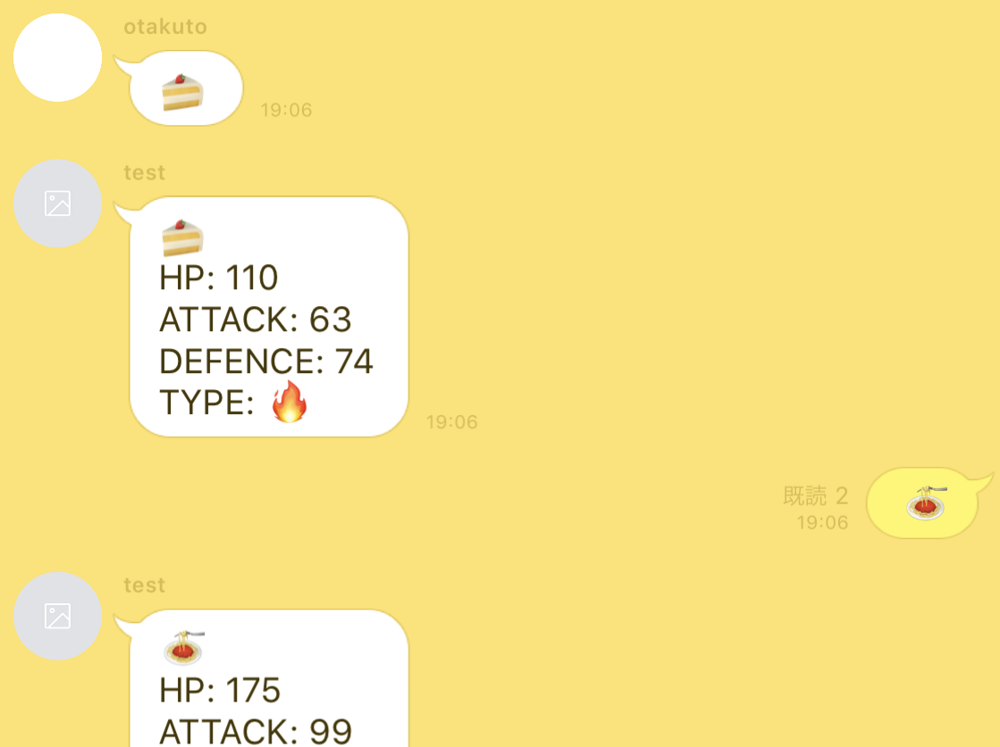

期間 | 1日 人数 | 2人 言語 | JavaScript
絵文字同士がバトルをするLINE BOT．LINEユーザ2人で利用し，まず一人一つずつ絵文字を送る． 次に，BOTがその絵文字のステータスを表示する．最後に，その絵文字同士が戦ったという設定で，ステータスのデータをもとにBOTが勝敗を決めてくれる． このLINE BOTの想定利用シーンとして，ランチのメニュー決めを挙げる．例えば2人のユーザが，ランチにパスタを食べるか寿司を食べるかで揉めていたとする． その際，このLINE BOTでその2つの絵文字を戦わせれば，どちらにするべきか平穏に決めることができる．